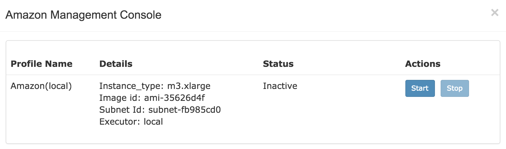

Amazon Cloud Guide¶
DolphinNext supports submitting jobs to the Amazon AWS cloud by using Nextflow. It allows you to practically setup, start/stop a computing cluster and run your pipeline in the AWS infrastructure.
Configuration¶
Once logged in, click on the profile tab in the top right of the screen. Both SSH and Amazon Keys need to be entered in each tab. Then you can proceed with creating amazon connection profile in the run environments tab. After creating profile “start/stop” button will appear in actions column of your amazon profile as shown in the figure below:

Clicking on the start/stop button will open new window called Amazon Management Console.
Amazon Management Console¶
Starting and stoping AWS cloud is conducted in Amazon management console. There are two ways to open console. First option is clicking following buttons: profile > run environments > Start/Stop. Altervatively, you can quickly reach Amazon console by clicking “Amazon” button at the top of the screen. The number of active profile is displayed with green tag at the top of the amazon button.
{kind=link}
When first created, state of your profile will be inactive as shown at below:
Starting Cluster¶
In order to active AWS cluster, click on “start” button of the profile you wanted to initiate. Following options will be prompted.
- Nodes: Enter the number of instances, you want to initiate. First node is created as
master, and the remaining asworkers. - Use autoscale: This is Nextflow’s critical feature which allows the cluster to adapt dynamically to the workload by changing computing recources. After clicking this option and entering number of Maximum Instances, new instances will be automatically added to the cluster when tasks remain too long in wait status. The upper limit should be entered by Maximum Instances to control the size of cluster. By default unused instances are removed when they are not utilised.
Profile status will be updated as Waiting for reply as soon as you click the “Activate Cluster” button. If your credentials and profile are correct, profile status will change to Initializing and Running, respectively. However, in case of missing or wrong profile information, status will turn into Terminated and reason of the error will appear next to the status. All available states of the profile are listed in table below:
| Status | Meaning |
|---|---|
| Inactive | AWS cloud has not initiated yet. |
| Waiting for reply | Cluster request is sent. |
| Initializing | Cluster request is accepted and nodes are initializing. |
| Running | AWS cloud ready to submit jobs. |
| Waiting for termination | Cluster termination request is sent and waiting for termination. |
| Terminated | AWS cloud has terminated. |
Once the cluster initialization is complete, user@hostname will appear next to the running status as shown in figure below.

You may connect to the master node by using the following SSH command:
ssh user@hostname
Submit a Job¶
Similar to regular job submission, follow these steps:
On the run page, you should select your active amazon profile as a Run Environment and click “Ready to Run” button.
Stoping Cluster¶
When runs are complete, you can stop cluster by clicking “stop” button on Amazon Management Console. Profile status will be updated as Waiting for termination, and in few seconds it will be changed to Terminated as soon as confirmation is received.